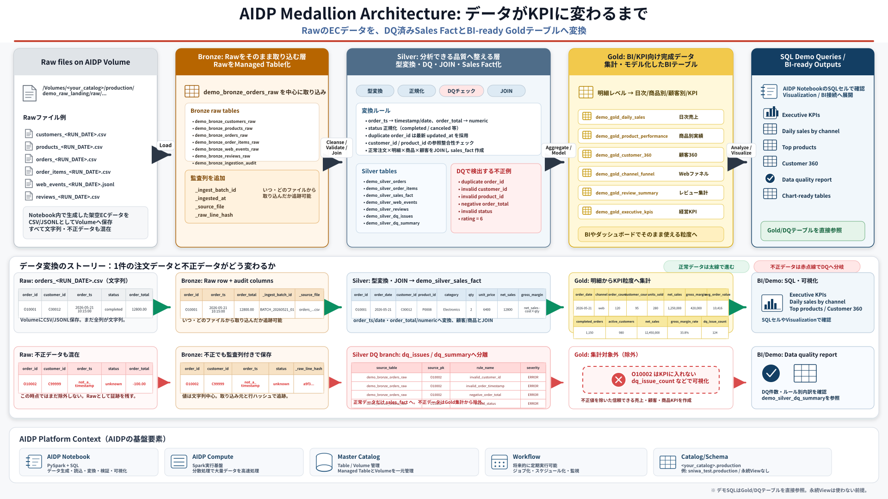

Why now
なぜDatabricksやOCI AIDPのような製品が必要なのか
企業のデータ活用は、BIだけでなくAI/ML、データ共有、ガバナンスまで広がりました。従来のようにDWH、データレイク、ETL、分析環境、機械学習環境が分断されると、同じデータのコピー、品質のばらつき、権限管理の分散が起きやすくなります。
データが増え、用途も増えた
業務データ、ログ、Web行動、レビュー、外部データを、BI、AI、ML、アプリケーションで再利用したい場面が増えています。
正しいデータを説明する必要がある
どのRawから来て、どこで品質チェックされ、どの集計に使われたかを追跡できないと、分析結果を信頼しにくくなります。
Platform principles
モダンデータプラットフォームに共通する観点
Databricksで広がったLakehouseやMedallion Architectureの考え方は、AIDPのような環境でデータ活用を説明するときにも役立ちます。このデモでは、製品比較ではなく、現場で重要になる共通パターンを体験します。
Open data processing
PySparkとSQLの両方で抽出・集計を行い、エンジニアにもSQL利用者にも説明しやすい形にします。
Lakehouse-style design
RawファイルとManaged Tableを組み合わせ、ファイルベースの柔軟性とテーブル管理の扱いやすさを両立します。
Governance and lineage
Catalog、監査列、DQテーブル、ソースファイル情報を使い、どこから来たデータかを追えるようにします。
Medallion Architecture
Rawをいきなり使わず、段階的に信頼度を上げる
RawデータをそのままBIやAIに使うと、型の揺れ、重複、不正値、参照切れ、集計ロジックのばらつきが結果に影響します。Medallion Architectureでは、Raw/Bronze/Silver/Goldに分け、どの時点で何を保証しているかを明確にします。
Raw
元ファイルを保管します。再処理できる原本として、CSV/JSONLをManaged Volumeに残します。
Bronze
Rawをほぼそのままテーブル化します。取り込み日時、ソースファイル、ハッシュなどの監査列を付与します。
Silver
型変換、重複排除、参照整合性チェック、不正データ分離を行い、分析に使える品質に整えます。
Gold
日次売上、商品実績、顧客360、ファネル、経営KPIなど、業務ユーザーがすぐ使える形に集計します。
Transformation detail
このデモでデータがどう変わるか
難しいポイントは、単にテーブル名が変わることではなく、各層でデータの意味と品質が変わることです。次の図では、RawのECデータがBronze、Silver、Goldへ進むにつれて、どのような加工を受けるかを示しています。

AIDP components
このデモで使うAIDPの部品
AIDPでは、Notebook、Spark Compute、Catalog、Managed Volumeを同じ作業環境で扱えます。これにより、データ生成、加工、確認、資産管理を一連のデモとして見せやすくなります。
Notebook
Python/PySparkとSQLを実行し、データ生成、加工、確認を順番に進める作業画面です。
Spark Compute
Notebookの処理を実行する計算エンジンです。JOINや集計を分散処理します。
Catalog
Schema、Table、Volumeなどのデータ資産を管理します。作成した各層のテーブルを確認できます。
Managed Volume
CSV/JSONLなどのファイル置き場です。RawファイルとArtifact出力に使います。
Demo assets
何を作り、何を確認するか
| Layer | 作成するもの | 確認するポイント |
|---|---|---|
| Raw | customers, products, orders, order_items, web_events, reviews |
Volume上にCSV/JSONLとして置かれた原本ファイルを確認します。 |
| Bronze | demo_bronze_*_raw, demo_bronze_ingestion_audit |
Raw取り込み件数、監査列、ソースファイル、取込バッチを確認します。 |
| Silver | demo_silver_*, demo_silver_dq_issues, demo_silver_dq_summary |
型変換、重複排除、不正データ分離、売上ファクトを確認します。 |
| Gold | demo_gold_daily_sales, demo_gold_product_performance, demo_gold_customer_360, demo_gold_executive_kpis |
BI/KPI向けに集計済みのテーブルをSQLとPythonの両方で確認します。 |
Run it
AIDPで実行する流れ
実行前チェック
NotebookにSpark Computeがアタッチされていること、Catalog名を自分の環境に合わせて変更していること、Schema production とManaged Volume demo_raw_landing / demo_artifacts が作成済みであることを確認します。
Notebook内の設定例
CATALOG = "<your_catalog>"
SCHEMA = "production"
RAW_VOLUME = "demo_raw_landing"
ARTIFACT_VOLUME = "demo_artifacts"